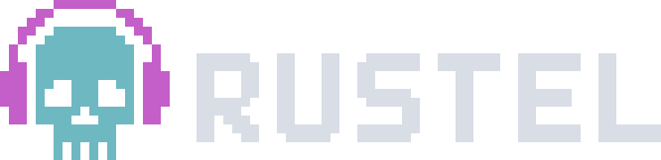

Widgets
Shift+F1 opens a dock of widgets beside the score. Add a scope, a spectrum, a vectorscope, or the event list. Press a to add one. The pictures move with the music.

rustel is a native engine for the Strudel pattern language. Use the full-fledged embedded Studio for music production and live performance. Or live-code in Neovim, or in your favorite text editor. MIDI, low-latency audio in, OSC for SuperDirt, serial, webcam, and gamepad are built in. One binary. No browser. No server.
Already on strudel.cc? Bring your patterns here. Almost everything from Strudel works. The compatibility docs list the few missing or inactive features.
curl -fL https://rustel.cc/install | bashApple Silicon and Intel. Open a new terminal, then run rustelup to install the engine. Then run rustel studio.
curl -fL https://rustel.cc/install | bashx86_64 and ARM64, including WSL 2. Requires glibc 2.39 or later, ALSA, and libudev. Open a new terminal, then run rustelup to install the engine. Then run rustel studio.
irm https://rustel.cc/install.ps1 | iexWindows 10 or later, x86_64, in PowerShell 5 or later. Open a new terminal, then run rustelup.cmd to install the engine. Then run rustel studio.
rustelup installs into ~/.rustel/bin. On Windows that folder is %USERPROFILE%\.rustel\bin. Run the updater again to refresh, or add --version v0.1.1 to pin a build. For dependencies and troubleshooting, see the installation guide. To build from source, follow the build guide.
rustel song.strudel --watch and edit in your favorite editor. Audio keeps running across saves. Or use the rustel-neovim plugin to drive the engine from Neovim.Shift+F1 opens a dock of widgets beside the score. Add a scope, a spectrum, a vectorscope, or the event list. Press a to add one. The pictures move with the music.
Ctrl+T opens the theme list. Arrow to a theme and press Enter. You can edit a theme. A theme can draw a Hydra background.
The first successful update creates a tape in the set's sessions/ folder. It records accepted scores, timing, slider changes, and stops. To capture the audio, record a take. Open a tape from the set panel, or replay it from the shell.
$rustel replay tonight.rustel-session$rustel replay tonight.rustel-session --from 600
Add --from 600 to start ten minutes in. For sound on disk, record a take or export a bounce.
Open Reference with Ctrl+F, then use Tab to reach Samples. Right expands a bank. Space starts or stops a preview. Enter inserts or copies the selection, as shown in the footer. Drop an audio file or folder on the terminal window running Studio to import it.
Chords and scales are the next two tabs. Each row draws its notes on a keyboard. Right opens the row. Space plays the chord or the scale. The keys light while it sounds.
Ctrl+D opens documentation for the function at the caret. Ctrl+F shows names, values, or functions that fit the caret position; outside a call, it opens the reference to browse and search. Enter uses the selection, as shown in the footer.
_pianoroll(), _scope(), _spectrum(), _punchcard(), and the rest draw inside the score. The playhead moves with the clock.
The generator tab builds a part from a musical direction. The examples tab holds parts, tracks, sound design, and Hydra sketches. In either tab, Space previews the music and c copies the code. Paste it into the editor, then update the score to play it.
F4 opens the mixer. The master and each orbit have a meter and a fader. Ctrl+Shift+Up and Ctrl+Shift+Down move the master.
Ctrl+P opens devices. Enter on audio in makes the highlighted row what s("in") plays. none turns the input off. F4 opens the mixer. The in strip meters that input, and its fader sets the gain. s("in") plays channel 0. s("in:1") plays the next channel. s("in").lpf(700) filters the input.
Audio out prints the delay under the list: the output, and the round trip once an input is open. The output is how long the sound takes to reach the speaker. The round trip is the return, how long audio in takes to come back with the effect on it. Settings, then Advanced, then audio out latency, sets the output buffer. A smaller buffer shortens that return, if the computer can take it. Both lines follow it.
The midi tab gives each port an in box and an out box. Left and right pick the column. Space ticks it. .midi() sends on a ticked out. midin() reads a ticked in.
Clock out sends this set's tempo, 24 pulses a beat, with start and stop. Clock in follows another machine. The header shows ⇄ and the bpm it locked. You still start the score.
Open Transport, then Add limiter to set. The master limiter's mixer strip sets the ceiling. Press c to change its mode and b to bypass it. The set remembers the limiter. The score-level .limit() is a separate effect.
Ctrl+O opens settings. Playback, look, samples, controllers, and key bindings are in there. Tab changes page.
Studio checks the score as you write. A pause after typing stops, and a bad call is underlined. The header counts the problems. The footer names the first one, often with a suggestion.
Settings, then syntax check, picks the mode. full marks errors while you type. That is the default. on update marks them only when an update is refused. off leaves the editor unmarked. An update still refuses a bad score, and the footer and the log still say why.
Tab to Mapping on the settings sheet. Twelve slots sit in a grid. Enter on a slot, then move a MIDI knob, a fader, or a stick. That control drives the matching slider.
Ctrl+L learns a pad for the scene you are on. Hit the pad. That pad launches the scene, the way a Maschine Mk3 pad fires a sound. Launch on, at the top of Settings, chooses the line it waits for. Off means the scene starts now. Beat, cycle, or a phrase waits.
Rewind update is Ctrl+Shift+S. The scene plays from cycle zero. Ctrl+Shift+U keeps rewind on that scene, so every launch starts there.
Ctrl+E splits the editor. The other pane opens the next scene. With one scene in the set, Ctrl+E makes the second. F10 moves the caret across. You edit both.
Update the pane you want to hear. Ctrl+Enter and F5 both do that. The title marks the sounding scene. Hop to the other pane and update, and that scene takes the sound. Ctrl+E again closes the split. Both scenes stay in the set.
await initHydra(), then a chain that ends in .out(), draws behind the code. The picture follows the score. Visuals opacity in Settings sets the strength of the picture.
Settings, then Advanced, then rendering, set to Kitty pixels. The scope, the piano roll, and Hydra draw as pictures, at the terminal's own resolution. Kitty draws them that way.
Performance is not guaranteed. It depends on the terminal's implementation and on the computer.
Shift+F11 records the master mix. The header shows the running take. Press the chord again to finish. Studio writes a 24-bit stereo WAV to the recordings folder, which defaults to ~/.rustel/recordings/. Change the folder in Settings, or use Transport → Reveal last export or take to find the file.
The visuals dock sits across the top, with a cat in ASCII and the mixer orbits under it. Ctrl+Shift+X exports the focused scene. Choose a length in cycles, or run until the sound falls quiet. Pick wav or mp3. The limiter can ride along. Enter writes the file.
Transport, then Reveal last export or take, opens that file's folder. A take is the live master. Export renders the scene to a file.
Ctrl+H records from your microphone or voice. Press it again to finish. The take lands in the recordings bank, ready to use right away. Ctrl+J pastes the name into the score. Chop that line, then update, and the slice plays.
Ctrl+J on a number offers to make a slider. After you update, the fader sits in the score. Every slider in the score also shows up on the mixer, so you can reach them without scrolling the score.
Run the engine from a shell. Watch a file. Bounce a render. Query a cycle. Open Studio.
# play and reload on each stable save $rustel song.strudel --watch# bounce a render $rustel render song.strudel -o take.wav --format scalar-wav --duration 60# check a score without sound $rustel check song.strudel# replay a jam from its session tape $rustel replay tonight.rustel-session# list audio and MIDI devices $rustel devices# print one cycle as JSON $rustel query -e 'note("c e g").s("piano")' --json# install shell completion $rustel completions --install# open Studio on your last set (creates one on first use) $rustel studio# open a score file (starter score if the path is new) $rustel studio song.strudel# open a set folder $rustel studio set/
The rustel-neovim plugin plays the buffer you have open. Syntax colors the score. Active notes light up as they sound. Scope, piano roll, spectrum, and spiral draw in the buffer.
Neovim 0.9 or newer, and rustel on your PATH. Ctrl+Enter updates. Ctrl+. stops.
Rust schedules patterns and runs DSP. Sandboxed QuickJS evaluates Strudel JavaScript. Ratatui draws Studio. DSP kernels pick SIMD paths from your CPU for low CPU and memory use. rustel doctor and Studio's About panel show the active kernels.
Ctrl+Enter updates. Ctrl+. stops. Same chords as strudel.cc. If your terminal blocks those, use Ctrl+S / F5 and Ctrl+G / F8. Open Settings → Keybinds to view or change bindings. On macOS use Control. Command works only when the terminal forwards Command.The Studio guide covers terminal profiles, keyboard fallbacks, and graphics modes.
If Rustel is part of your music-making, consider a donation to support its development. Any amount is appreciated.
Ethereum & EVM chains
0x6900e16f4322130c54Ced2D80c12D396aA6d190f